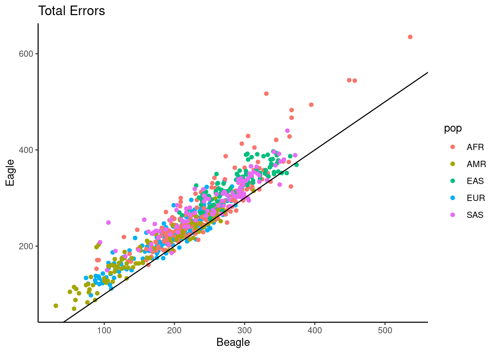

Last updated: 2024-02-28
Checks: 6 1
Knit directory: phasing/
This reproducible R Markdown analysis was created with workflowr (version 1.7.1). The Checks tab describes the reproducibility checks that were applied when the results were created. The Past versions tab lists the development history.
Great! Since the R Markdown file has been committed to the Git repository, you know the exact version of the code that produced these results.
Great job! The global environment was empty. Objects defined in the global environment can affect the analysis in your R Markdown file in unknown ways. For reproduciblity it’s best to always run the code in an empty environment.
The command set.seed(20220221) was run prior to running
the code in the R Markdown file. Setting a seed ensures that any results
that rely on randomness, e.g. subsampling or permutations, are
reproducible.
Great job! Recording the operating system, R version, and package versions is critical for reproducibility.
Nice! There were no cached chunks for this analysis, so you can be confident that you successfully produced the results during this run.
Using absolute paths to the files within your workflowr project makes it difficult for you and others to run your code on a different machine. Change the absolute path(s) below to the suggested relative path(s) to make your code more reproducible.
| absolute | relative |
|---|---|
| /net/snowwhite/home/beckandy/research/phasing/output/final_switch_errors/switch_errors/eagle/annotated/ | output/final_switch_errors/switch_errors/eagle/annotated |
| /net/snowwhite/home/beckandy/research/phasing/output/final_switch_errors/switch_errors/shapeit/annotated/ | output/final_switch_errors/switch_errors/shapeit/annotated |
| /net/snowwhite/home/beckandy/research/phasing/output/final_switch_errors/switch_errors/beagle/annotated/ | output/final_switch_errors/switch_errors/beagle/annotated |
| /net/snowwhite/home/beckandy/research/phasing/output/final_switch_errors/vcf_n_sites/ | output/final_switch_errors/vcf_n_sites |
| /net/snowwhite/home/beckandy/research/phasing/output/final_switch_errors/whatshap/ | output/final_switch_errors/whatshap |
| /net/snowwhite/home/beckandy/research/phasing/output/final_switch_errors/het_loc/ | output/final_switch_errors/het_loc |
| /net/snowwhite/home/beckandy/research/phasing/output/background_rates/dimer.csv | output/background_rates/dimer.csv |
| /net/snowwhite/home/beckandy/research/phasing/output/background_rates/3mer.csv | output/background_rates/3mer.csv |
| /net/snowwhite/home/beckandy/research/phasing/output/final_switch_errors/het_loc/phased_size.txt | output/final_switch_errors/het_loc/phased_size.txt |
Great! You are using Git for version control. Tracking code development and connecting the code version to the results is critical for reproducibility.
The results in this page were generated with repository version cfc5300. See the Past versions tab to see a history of the changes made to the R Markdown and HTML files.
Note that you need to be careful to ensure that all relevant files for
the analysis have been committed to Git prior to generating the results
(you can use wflow_publish or
wflow_git_commit). workflowr only checks the R Markdown
file, but you know if there are other scripts or data files that it
depends on. Below is the status of the Git repository when the results
were generated:
Ignored files:
Ignored: .Rhistory
Ignored: .Rproj.user/
Ignored: data/1kgp/
Ignored: data/consensus/
Ignored: data/gnomAD/
Ignored: data/mask/
Ignored: data/ovary/
Ignored: data/recomb/
Ignored: data/ref/
Ignored: data/shapeit/
Ignored: output/2023_switch_errors/
Ignored: output/X_hets/
Ignored: output/admix_switch_errors/
Ignored: output/afr_eur_ref/
Ignored: output/background_rates/
Ignored: output/figures/
Ignored: output/filter_switch_errors/
Ignored: output/final_switch_errors/
Ignored: output/gnomad/
Ignored: output/male_only_reference/
Ignored: output/nygc/
Ignored: output/singleton_switch_errors/
Ignored: plink.log
Ignored: sandbox/
Unstaged changes:
Modified: analysis/_site.yml
Modified: code/batch_annotate_het.sh
Modified: code/batch_annotate_switch.sh
Modified: code/batch_diploid_v3.sh
Modified: code/batch_vote_phase.sh
Note that any generated files, e.g. HTML, png, CSS, etc., are not included in this status report because it is ok for generated content to have uncommitted changes.
These are the previous versions of the repository in which changes were
made to the R Markdown (analysis/results_paper.Rmd) and
HTML (docs/results_paper.html) files. If you’ve configured
a remote Git repository (see ?wflow_git_remote), click on
the hyperlinks in the table below to view the files as they were in that
past version.
| File | Version | Author | Date | Message |
|---|---|---|---|---|
| Rmd | cfc5300 | Andy Beck | 2024-02-28 | wflow_publish("analysis/results_paper.Rmd") |
library(tidyverse)── Attaching core tidyverse packages ──────────────────────── tidyverse 2.0.0 ──
✔ dplyr 1.1.4 ✔ readr 2.1.5
✔ forcats 1.0.0 ✔ stringr 1.5.1
✔ ggplot2 3.5.0 ✔ tibble 3.2.1
✔ lubridate 1.9.3 ✔ tidyr 1.3.1
✔ purrr 1.0.2
── Conflicts ────────────────────────────────────────── tidyverse_conflicts() ──
✖ dplyr::filter() masks stats::filter()
✖ dplyr::lag() masks stats::lag()
ℹ Use the conflicted package (<http://conflicted.r-lib.org/>) to force all conflicts to become errorslibrary(janitor)
Attaching package: 'janitor'
The following objects are masked from 'package:stats':
chisq.test, fisher.testsource("code/common_functions.R")
library(ggsci)
library(reactable)
theme_set(theme_bw(base_size = 18))
eagle_switch_dir <- "/net/snowwhite/home/beckandy/research/phasing/output/final_switch_errors/switch_errors/eagle/annotated/"
shapeit_switch_dir <- "/net/snowwhite/home/beckandy/research/phasing/output/final_switch_errors/switch_errors/shapeit/annotated/"
beagle_switch_dir <- "/net/snowwhite/home/beckandy/research/phasing/output/final_switch_errors/switch_errors/beagle/annotated/"
num_sites_dir <- "/net/snowwhite/home/beckandy/research/phasing/output/final_switch_errors/vcf_n_sites/"
whatshap_dir <- "/net/snowwhite/home/beckandy/research/phasing/output/final_switch_errors/whatshap/"
whatshap_dir2 <- "/net/snowwhite/home/beckandy/research/phasing/output/final_switch_errors/whatshap/"
het_loc_dir <- "/net/snowwhite/home/beckandy/research/phasing/output/final_switch_errors/het_loc/"
pair_info_df <- read_delim("data/sample_pairs_9aug2023.csv", col_names = c("POP", "ID1", "ID2"))Rows: 700 Columns: 3
── Column specification ────────────────────────────────────────────────────────
Delimiter: ","
chr (3): POP, ID1, ID2
ℹ Use `spec()` to retrieve the full column specification for this data.
ℹ Specify the column types or set `show_col_types = FALSE` to quiet this message.pair_info_df$SP <- c(rep("EUR", 200), rep("AFR", 200), rep("AMR", 100), rep("EAS", 100), rep("SAS", 100))
gc_content_1kb <- read_tsv("data/ref/gc1kb_X_only.bed")Rows: 156041 Columns: 12
── Column specification ────────────────────────────────────────────────────────
Delimiter: "\t"
chr (1): #1_usercol
dbl (11): 2_usercol, 3_usercol, 4_pct_at, 5_pct_gc, 6_num_A, 7_num_C, 8_num_...
ℹ Use `spec()` to retrieve the full column specification for this data.
ℹ Specify the column types or set `show_col_types = FALSE` to quiet this message.colnames(gc_content_1kb) <- c("CHR", "START", "END", "AT", "GC", "A", "C", "G", "T", "TOTAL", "OTHER", "LENGTH")
gc_content_1kb <- gc_content_1kb %>%
mutate(bin_id = (START / 1000) + 1)
background_dimer <- read_csv("/net/snowwhite/home/beckandy/research/phasing/output/background_rates/dimer.csv")Rows: 16 Columns: 2
── Column specification ────────────────────────────────────────────────────────
Delimiter: ","
chr (1): Nucs
dbl (1): N
ℹ Use `spec()` to retrieve the full column specification for this data.
ℹ Specify the column types or set `show_col_types = FALSE` to quiet this message.background_3mer <- read_csv("/net/snowwhite/home/beckandy/research/phasing/output/background_rates/3mer.csv")Rows: 64 Columns: 2
── Column specification ────────────────────────────────────────────────────────
Delimiter: ","
chr (1): Nucs
dbl (1): N
ℹ Use `spec()` to retrieve the full column specification for this data.
ℹ Specify the column types or set `show_col_types = FALSE` to quiet this message.cbPalette <- c("#999999", "#E69F00", "#56B4E9", "#009E73", "#F0E442", "#0072B2", "#D55E00", "#CC79A7")
background_cpg_het <- 229868 / 1567042
df_vcftools <- lapply(c(1:700),
function(x){
switch_summary(x, eagle_switch_dir, beagle_switch_dir, shapeit_switch_dir, gc_content_1kb, het_loc_dir)
}) %>%
bind_rows()
df_vcftools$pop <- c(rep("EUR", 200), rep("AFR", 200), rep("AMR", 100), rep("EAS", 100), rep("SAS", 100))
df_wh_eagle <- get_all_whatshap("eagle", n = 700, pop = c(rep("EUR", 200), rep("AFR", 200), rep("AMR", 100), rep("EAS", 100), rep("SAS", 100)))
df_wh_beagle <- get_all_whatshap("beagle", n = 700, pop = c(rep("EUR", 200), rep("AFR", 200), rep("AMR", 100), rep("EAS", 100), rep("SAS", 100)))
df_wh_si <- get_all_whatshap("shapeit", n = 700, pop = c(rep("EUR", 200), rep("AFR", 200), rep("AMR", 100), rep("EAS", 100), rep("SAS", 100)))
par_size <- (2781479 - 10001) + (156030895 - 155701383)
pd_size <- read_tsv("/net/snowwhite/home/beckandy/research/phasing/output/final_switch_errors/het_loc/phased_size.txt",
col_names = c("id", "size"), show_col_types = FALSE) %>%
mutate(size_mb = (size - par_size) / 1e6)
df_wh_eagle$size_mb <- pd_size$size_mb
df_wh_beagle$size_mb <- pd_size$size_mb
df_wh_si$size_mb <- pd_size$size_mb
df_vcftools$size_mb <- pd_size$size_mbWith our simulated synthetic diploids, we evaluate how well each of the three methods were able to reconstruct the known haplotypes. Both switches and flips are tallied across synthetic diploids to identify which methods introduced the most and least errors of each kind. Furthermore, we evaluate the overlap of errors between methods by identifying shared flips and switches within each synthetic diploid. Finally, we describe the genomic context in which errors occur by contrasting the density of errors across the chromosome with genomic features such as GC content and recombination rate.
df_vcftools <- df_vcftools %>%
mutate(n_total_beagle = n_other_beagle + n_flip_beagle,
n_total_eagle = n_other_eagle + n_flip_eagle,
n_total_shapeit = n_other_shapeit + n_flip_shapeit)
df_vcftools %>%
select(n_total_beagle, n_total_eagle, n_total_shapeit) %>%
psych::describe() vars n mean sd median trimmed mad min max range skew
n_total_beagle 1 700 224.92 69.74 228.5 226.29 61.53 31 536 505 -0.04
n_total_eagle 2 700 256.65 72.83 252.0 255.52 65.23 70 635 565 0.45
n_total_shapeit 3 700 216.73 67.48 217.0 217.39 62.27 42 444 402 -0.04
kurtosis se
n_total_beagle 0.34 2.64
n_total_eagle 1.41 2.75
n_total_shapeit -0.12 2.55df_vcftools %>%
{sum(.$n_total_shapeit < .$n_total_eagle)}[1] 672df_vcftools %>%
{sum(.$n_total_shapeit < .$n_total_beagle)}[1] 454df_vcftools %>%
{sum(.$n_total_beagle < .$n_total_eagle)}[1] 645Averaging across all 700 synthetic diploids, we find that SHAPEIT tends to introduce fewer total errors overall (mean 216.7, sd 69.74) than both Eagle (mean 256.65, sd 72.83) and Beagle (224.92, 69.74). While SHAPEIT does not always introduce fewer total errors in each synthetic diploid, for 672/700 synthetic diploids it introduces fewer total errors than Eagle. Beagle also tends to introduce fewer total errors than Eagle, with 645/700 synthetic diploids having fewer errors in Beagle than in Eagle. The distributions of total errors is more comparable between Beagle and SHAPEIT, where SHAPEIT introduces fewer errors in just over half (454/700) of the synthetic diploids. Within each synthetic diploid, Eagle introduced on average 31.73 (25.09) more total errors than beagle and 39.92 (28.28) more errors than SHAPEIT, while Beagle on average introduced 8.19 (18.80) more total errors than SHAPEIT.
df_tmp <- df_vcftools %>%
mutate(diff_e_b = n_total_eagle - n_total_beagle,
diff_e_s = n_total_eagle - n_total_shapeit,
diff_b_s = n_total_beagle - n_total_shapeit)
df_tmp %>%
select(starts_with("diff_")) %>%
psych::describe() vars n mean sd median trimmed mad min max range skew kurtosis
diff_e_b 1 700 31.73 25.09 28 29.88 22.24 -42 186 228 1.05 2.94
diff_e_s 2 700 39.92 28.28 37 37.27 22.24 -19 211 230 1.54 4.93
diff_b_s 3 700 8.19 18.80 7 7.42 17.79 -52 92 144 0.37 0.66
se
diff_e_b 0.95
diff_e_s 1.07
diff_b_s 0.71t.test(df_tmp$diff_b_s)
One Sample t-test
data: df_tmp$diff_b_s
t = 11.524, df = 699, p-value < 2.2e-16
alternative hypothesis: true mean is not equal to 0
95 percent confidence interval:
6.792289 9.581996
sample estimates:
mean of x
8.187143 t.test(df_tmp$diff_e_b)
One Sample t-test
data: df_tmp$diff_e_b
t = 33.46, df = 699, p-value < 2.2e-16
alternative hypothesis: true mean is not equal to 0
95 percent confidence interval:
29.87084 33.59487
sample estimates:
mean of x
31.73286 t.test(df_tmp$diff_e_s)
One Sample t-test
data: df_tmp$diff_e_s
t = 37.354, df = 699, p-value < 2.2e-16
alternative hypothesis: true mean is not equal to 0
95 percent confidence interval:
37.82175 42.01825
sample estimates:
mean of x
39.92 df_tmp %>%
ggplot(aes(x = n_total_beagle, y = n_total_eagle, color=pop)) +
geom_point() +
geom_abline(slope = 1, intercept = 0) +
theme_classic() +
ggtitle("Total Errors") +
xlab("Beagle") +
ylab("Eagle")
df_vcftools %>%
select(starts_with("n_other")) %>%
psych::describe() vars n mean sd median trimmed mad min max range
n_other_eagle 1 700 155.77 47.50 154 155.11 43.00 33 367 334
n_other_beagle 2 700 138.23 46.38 139 138.51 44.48 20 309 289
n_other_shapeit 3 700 107.91 43.64 104 106.59 44.48 10 235 225
n_other_cpg_eagle 4 700 30.14 10.50 30 29.83 10.38 2 71 69
n_other_cpg_beagle 5 700 25.38 9.65 25 25.15 8.90 1 59 58
n_other_cpg_shapeit 6 700 17.66 8.73 17 17.12 8.90 1 46 45
skew kurtosis se
n_other_eagle 0.26 0.47 1.80
n_other_beagle -0.01 -0.09 1.75
n_other_shapeit 0.24 -0.41 1.65
n_other_cpg_eagle 0.36 0.40 0.40
n_other_cpg_beagle 0.24 -0.12 0.36
n_other_cpg_shapeit 0.59 0.10 0.33df_vcftools %>%
{sum(.$n_other_shapeit < .$n_other_eagle)}[1] 699df_vcftools[which(df_vcftools$n_other_eagle < df_vcftools$n_other_shapeit),] %>%
select(starts_with("n_other")) n_other_eagle n_other_beagle n_other_shapeit n_other_cpg_eagle
464 164 166 170 27
n_other_cpg_beagle n_other_cpg_shapeit
464 31 24df_vcftools %>%
{sum(.$n_other_shapeit < .$n_other_beagle)}[1] 685df_vcftools %>%
{sum(.$n_other_beagle < .$n_other_eagle)}[1] 604df_tmp <- df_vcftools %>%
mutate(diff_e_b = n_other_eagle - n_other_beagle,
diff_e_s = n_other_eagle - n_other_shapeit,
diff_b_s = n_other_beagle - n_other_shapeit)
df_tmp %>%
select(starts_with("diff_")) %>%
psych::describe() vars n mean sd median trimmed mad min max range skew kurtosis
diff_e_b 1 700 17.54 16.48 16 16.71 16.31 -30 91 121 0.57 0.79
diff_e_s 2 700 47.86 22.19 45 45.92 17.79 -6 176 182 1.58 5.32
diff_b_s 3 700 30.32 18.32 28 29.04 17.79 -22 118 140 0.79 1.34
se
diff_e_b 0.62
diff_e_s 0.84
diff_b_s 0.69Considering flips and non-flip switches as distinct categories of error, we compare the distributions of both kinds of errors across the three methods. Similar to total errors, we find that on average SHAPEIT introduces fewer switches (mean 107.91, sd 43.64) than either Eagle (mean 155.77, sd 47.50) or Beagle (mean 138.23, sd 46.38). Within individual synthetic diploids, Eagle on average introduces 47.86 (sd 22.19) switches than SHAPEIT and 17.54 (sd 16.48) more switches than Beagle, while Begle on average introduces 30.32 (sd 18.32) more switches than SHAPEIT. Only in 1 of the 700 synthetic diploids does SHAPEIT introduce more switches than EAGLE, while in 685/700 synthetic diploids fewer switches are generated by SHAPEIT than in Beagle. Beagle also introduces fewer switches than Eagle in most synthetic diploids, with only 83 synthetic diploids having fewer switches in Eagle than in Beagle.
df_vcftools %>%
select(starts_with("n_flip")) %>%
psych::describe() vars n mean sd median trimmed mad min max range
n_flip_eagle 1 700 100.87 29.33 98.5 99.48 25.95 32 268 236
n_flip_beagle 2 700 86.69 27.00 86.0 86.56 25.20 11 227 216
n_flip_shapeit 3 700 108.81 31.46 108.0 108.81 28.17 30 264 234
n_flip_cpg_eagle 4 700 15.64 5.86 15.0 15.27 5.93 2 46 44
n_flip_cpg_beagle 5 700 13.92 5.33 14.0 13.81 5.93 0 35 35
n_flip_cpg_shapeit 6 700 17.54 6.23 17.0 17.43 5.93 2 46 44
skew kurtosis se
n_flip_eagle 0.96 3.13 1.11
n_flip_beagle 0.28 1.14 1.02
n_flip_shapeit 0.26 1.16 1.19
n_flip_cpg_eagle 0.87 2.03 0.22
n_flip_cpg_beagle 0.28 -0.02 0.20
n_flip_cpg_shapeit 0.32 0.51 0.24df_vcftools %>%
{sum(.$n_flip_shapeit >= .$n_flip_eagle)}[1] 516df_vcftools %>%
{sum(.$n_flip_shapeit > .$n_flip_beagle)}[1] 691df_vcftools %>%
{sum(.$n_flip_beagle < .$n_flip_eagle)}[1] 582df_tmp <- df_vcftools %>%
mutate(diff_e_b = n_flip_eagle - n_flip_beagle,
diff_e_s = n_flip_eagle - n_flip_shapeit,
diff_b_s = n_flip_beagle - n_flip_shapeit)
df_tmp %>%
select(starts_with("diff_")) %>%
psych::describe() vars n mean sd median trimmed mad min max range skew
diff_e_b 1 700 14.19 14.84 13 13.36 13.34 -28 95 123 0.72
diff_e_s 2 700 -7.94 15.56 -9 -8.68 14.83 -49 58 107 0.61
diff_b_s 3 700 -22.13 11.42 -21 -21.56 10.38 -72 4 76 -0.55
kurtosis se
diff_e_b 1.61 0.56
diff_e_s 1.06 0.59
diff_b_s 0.53 0.43In contrast to switch errors, we find that SHAPEIT tends to introduce more flips errors on average (mean 108.81, sd 31.46) than either Eagle (mean 100.87, sd 29.33) or Beagle (mean 86.69, sd 27.00). Out of the 700 synthetic diploids, SHAPEIT introduces as many or more flips as Eagle in 516 synthetic diploids and as many or more flips as Beagle in 695 synthetic diploids, while in 582 synthetic diploids Eagle introduces more flips than Beagle. On average within each synthetic diploid, SHAPEIT introduces 7.94 (15.56) more flips than Eagle and 22.13 (11.42) more flips than Beagle, while Eagle introduces 14.19 (14.84) more flips than Beagle.
sessionInfo()R version 4.3.2 (2023-10-31)
Platform: x86_64-pc-linux-gnu (64-bit)
Running under: Ubuntu 20.04.6 LTS
Matrix products: default
BLAS: /usr/lib/x86_64-linux-gnu/openblas-pthread/libblas.so.3
LAPACK: /usr/lib/x86_64-linux-gnu/openblas-pthread/liblapack.so.3; LAPACK version 3.9.0
locale:
[1] LC_CTYPE=en_US.UTF-8 LC_NUMERIC=C
[3] LC_TIME=en_US.UTF-8 LC_COLLATE=en_US.UTF-8
[5] LC_MONETARY=en_US.UTF-8 LC_MESSAGES=en_US.UTF-8
[7] LC_PAPER=en_US.UTF-8 LC_NAME=C
[9] LC_ADDRESS=C LC_TELEPHONE=C
[11] LC_MEASUREMENT=en_US.UTF-8 LC_IDENTIFICATION=C
time zone: America/New_York
tzcode source: system (glibc)
attached base packages:
[1] stats graphics grDevices utils datasets methods base
other attached packages:
[1] reactable_0.4.4 ggsci_3.0.0 janitor_2.2.0 lubridate_1.9.3
[5] forcats_1.0.0 stringr_1.5.1 dplyr_1.1.4 purrr_1.0.2
[9] readr_2.1.5 tidyr_1.3.1 tibble_3.2.1 ggplot2_3.5.0
[13] tidyverse_2.0.0 workflowr_1.7.1
loaded via a namespace (and not attached):
[1] gtable_0.3.4 xfun_0.42 bslib_0.6.1 htmlwidgets_1.6.4
[5] psych_2.4.1 processx_3.8.3 lattice_0.22-5 callr_3.7.5
[9] tzdb_0.4.0 vctrs_0.6.5 tools_4.3.2 ps_1.7.6
[13] generics_0.1.3 parallel_4.3.2 fansi_1.0.6 highr_0.10
[17] pkgconfig_2.0.3 lifecycle_1.0.4 farver_2.1.1 compiler_4.3.2
[21] git2r_0.33.0 mnormt_2.1.1 munsell_0.5.0 getPass_0.2-4
[25] snakecase_0.11.1 httpuv_1.6.14 htmltools_0.5.7 sass_0.4.8
[29] yaml_2.3.8 later_1.3.2 pillar_1.9.0 crayon_1.5.2
[33] jquerylib_0.1.4 whisker_0.4.1 cachem_1.0.8 nlme_3.1-164
[37] tidyselect_1.2.0 digest_0.6.34 stringi_1.8.3 labeling_0.4.3
[41] rprojroot_2.0.4 fastmap_1.1.1 grid_4.3.2 archive_1.1.7
[45] colorspace_2.1-0 cli_3.6.2 magrittr_2.0.3 utf8_1.2.4
[49] withr_3.0.0 scales_1.3.0 promises_1.2.1 bit64_4.0.5
[53] timechange_0.3.0 rmarkdown_2.25 httr_1.4.7 bit_4.0.5
[57] hms_1.1.3 evaluate_0.23 knitr_1.45 rlang_1.1.3
[61] Rcpp_1.0.12 glue_1.7.0 rstudioapi_0.15.0 vroom_1.6.5
[65] jsonlite_1.8.8 R6_2.5.1 fs_1.6.3